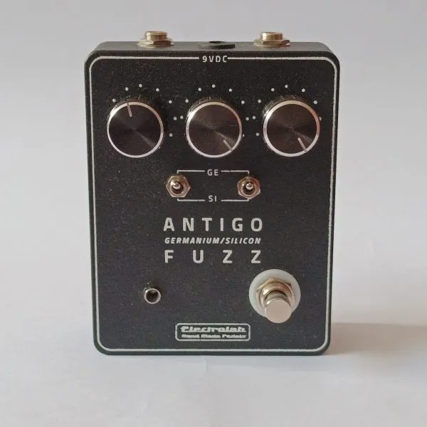
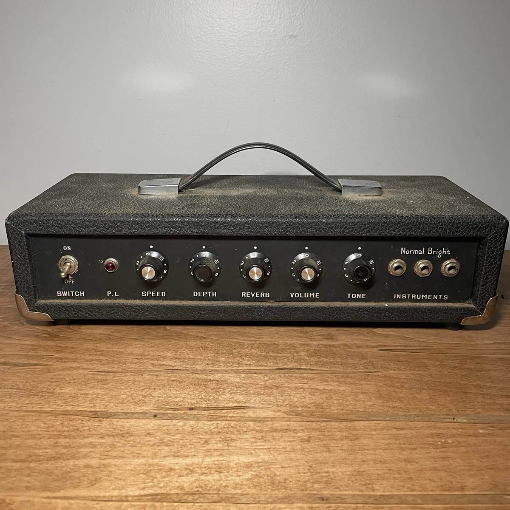

01

Fuzz Face (1966)O FUZZ
O fuzz é um dos primeiros efeitos de distorção para guitarra elétrica. O Fuzz Face, lançado em 1966, foi um dos mais influentes e até hoje é referência no som do rock.
02

Reverb (anos 60)O REVERB
O reverb começou a ser usado em estúdios nos anos 60, com sistemas de mola e, depois, digitais. Ele simula o som do ambiente, trazendo profundidade e espaço para a música.
03
.jpg) Desenvolvendo o projeto
Desenvolvendo o projeto
OS ALUNOS EM AÇÃO
Os alunos desenvolveram uma belíssima e organizada apresentação, pensada por dias em que fora construídos um fuzz e um reverb totalmente feito à mão, testando os efeitos e entendendo como a eletrônica se conecta diretamente com a música.